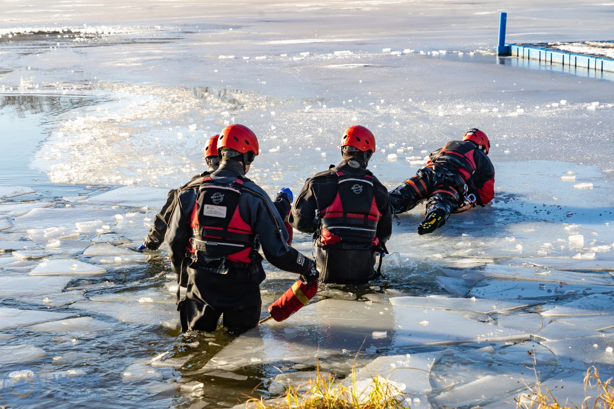
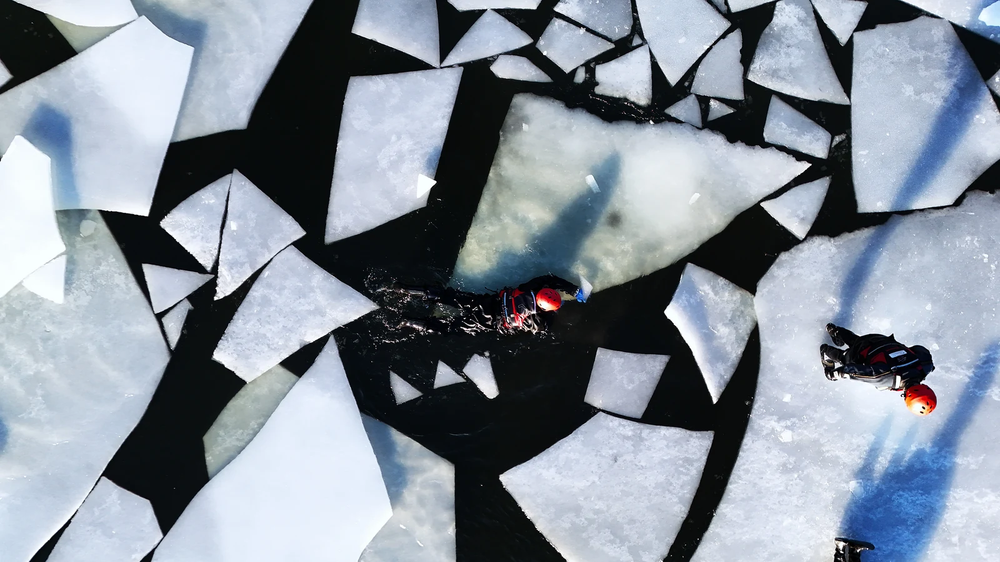
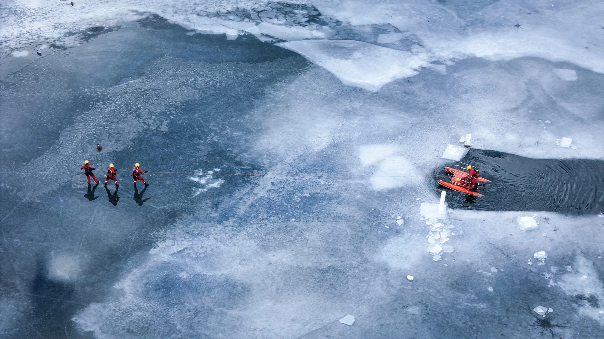
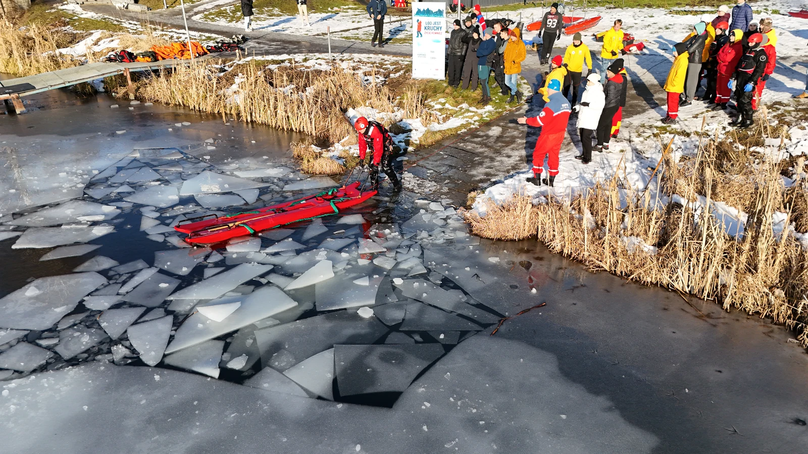
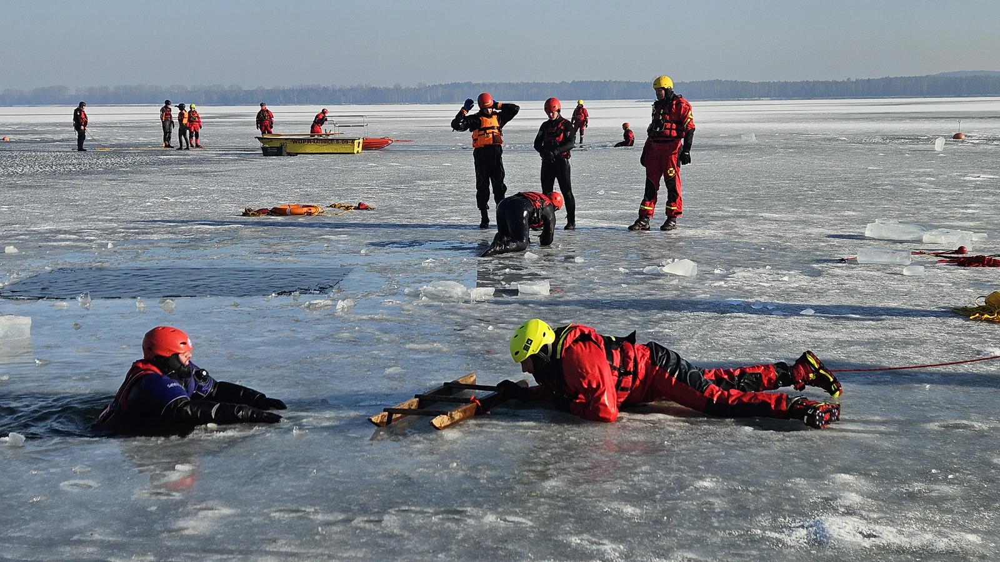
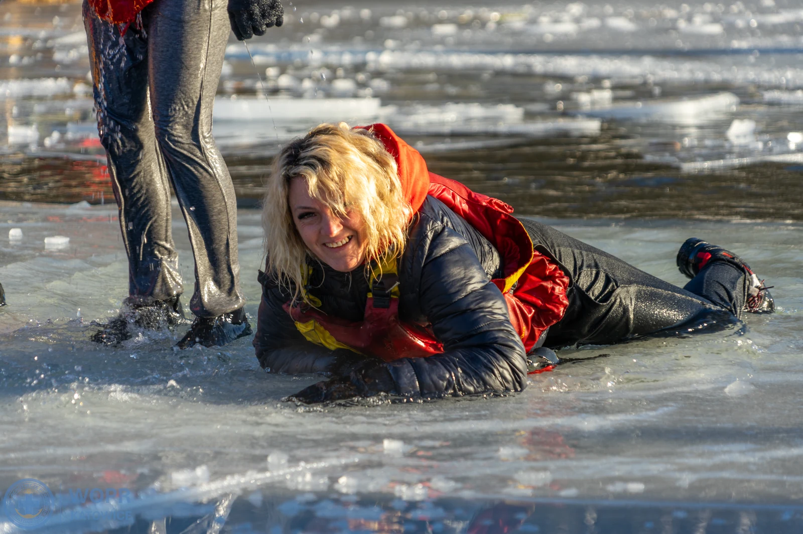
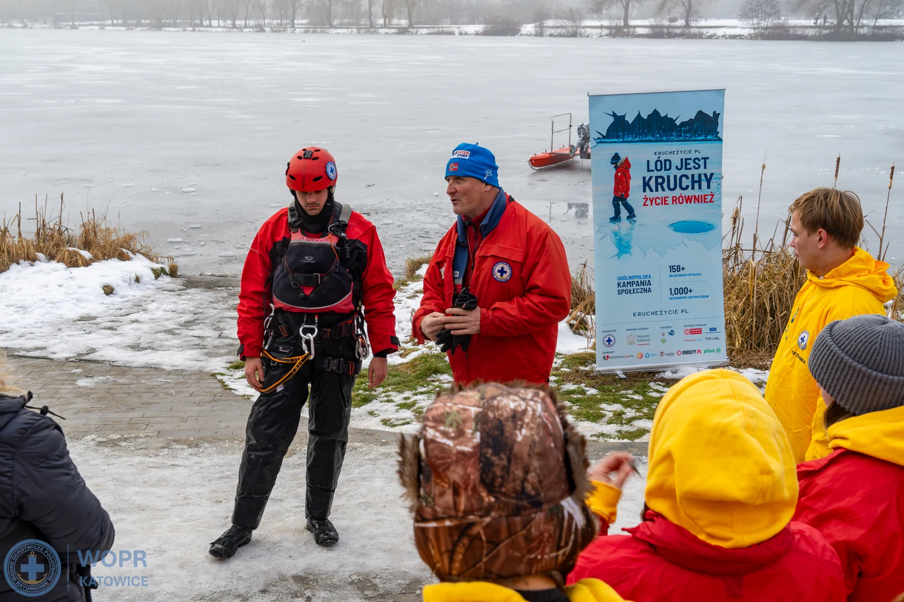
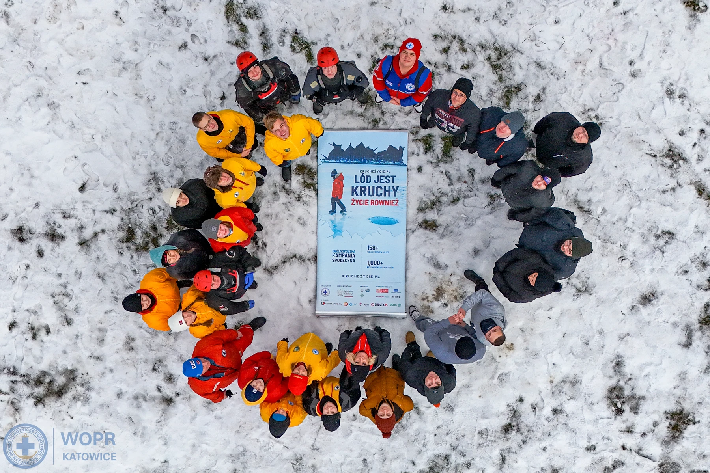

Gdy lód pęka pod stopami,
decydują sekundy.
Oficjalny, ujednolicony system szkoleniowy WOPR od 2008 roku. Intensywny zjazd manewrowy na akwenie zimowym. Praca w suchych kombinezonach wypornościowych, sanie lodowe, samoratownictwo i zaawansowane procedury asekuracyjne.
Dwa Poziomy. Jeden Cel: Bezpieczeństwo.
Zgodnie z ujednoliconym programem Komisji Szkoleniowej WOPR szkolenia lodowe dzielą się na dwa stopnie zaawansowania.
Ratownictwo w Sytuacjach Realnych
Szkolenie przeznaczone dla pełnoletnich ratowników WOPR z ważnym KPP. Przygotowuje do bezpośrednich działań w zespole z wykorzystaniem sań lodowych, desek lodowych oraz suchych skafandrów wypornościowych w najtrudniejszych warunkach pogodowych.
Samoratownictwo i Podstawy Bezpieczeństwa
Poziom podstawowy, odpowiednik idei stopnia Młodszego Ratownika WOPR. Stanowi wprowadzenie do ratownictwa lodowego i buduje fundament wiedzy oraz umiejętności niezbędnych do bezpiecznego przebywania i reagowania na akwenach zimowych.
Czym jest Centralne Szkolenie Lodowe WOPR?
To element ogólnopolskiego systemu szkoleniowego WOPR, którego celem jest przygotowanie ratowników do bezpiecznego i skutecznego działania na obszarach pokrytych lodem. Szkolenia te odpowiadają na realne zagrożenia występujące zimą na akwenach i stanowią istotny etap rozwoju kompetencji ratowniczych.
System szkoleń z ratownictwa lodowego został sklasyfikowany i ujednolicony w 2008 roku. Część elementów szkolenia pozostaje niezmienna jako fundament technik ratowniczych, natomiast inne są na bieżąco modyfikowane i dostosowywane do rozwoju sprzętu oraz zmieniających się realiów działań ratowniczych na śląskich i ogólnopolskich akwenach.

Najbliższy Zjazd Zimowy
Dedykowane Centralne Szkolenie Specjalistyczne na akwenie zimowym organizowane przez Śląskie WOPR.
Centralne Szkolenie Specjalistyczne z Zakresu Ratownictwa Lodowego
Wymóg posiadania własnego skafandra. Zapewniamy profesjonalny sprzęt lodowy, asekurację instruktorską oraz ciepłą bazę socjalną.
Zapisz się na ten terminPoligon Lodowy w Obiektywie
Unikalne kadry z lotu ptaka i manewrów na lodzie wykonane podczas ćwiczeń jednostek Śląskiego WOPR.






Wymagania i Logistyka
Przejrzyste zasady naboru i wyposażenie gwarantowane przez organizatora.
Wymagania Poziom A (Stażysta)
- Ukończony 14. rok życia przed rozpoczęciem manewrów.
- Przynależność do jednostki WOPR (lub status stażysty/kandydata).
- Pisemna zgoda opiekunów prawnych dla osób poniżej 18 roku życia.
- Brak przeciwwskazań zdrowotnych do wysiłku fizycznego.
Wymagania Poziom B (Ratownik)
- Ukończone 18 lat.
- Uprawnienia co najmniej Ratownika WOPR lub Ratownika Wodnego MSWiA.
- Ważne zaświadczenie KPP (Kwalifikowana Pierwsza Pomoc).
- Aktualne badania lekarskie lub oświadczenie o stanie zdrowia.
Organizator zapewnia uczestnikom:
Profesjonalne sanie lodowe, system woda-lód, JACEK lodowy, deski lodowe, rzutki, kolce lodowe.
Ciepłe posiłki regeneracyjne, kawa, herbata i zaplecze sanitarne.
Certyfikat ukończenia szkolenia oraz naszywka.

„Lód jest kruchy.
Życie również.”
Centralne Szkolenia Lodowe Śląskiego WOPR są nierozerwalnie połączone z ogólnopolską kampanią profilaktyczno-edukacyjną Kruche Życie. Każdego sezonu uświadamiamy tysiące mieszkańców: nie ma bezpiecznego lodu naturalnego.
Prądy podwodne, odwilże i trzcinowiska osłabiają pokrywę lodową w niewidoczny z góry sposób.
Kolce lodowe, opanowanie paniki i technika wyczołgiwania się po własnych śladach ratują życie przed hipotermią.
Szybkie wezwanie ratowników WOPR i asekuracja z bezpiecznej odległości przedmiotami zastępczymi (gałąź, lina, szalik).
Formularz Zgłoszeniowy CSS Lodowe
Wypełnij formularz. Zgłoszenie trafia bezpośrednio do bazy organizatora Śląskiego WOPR.